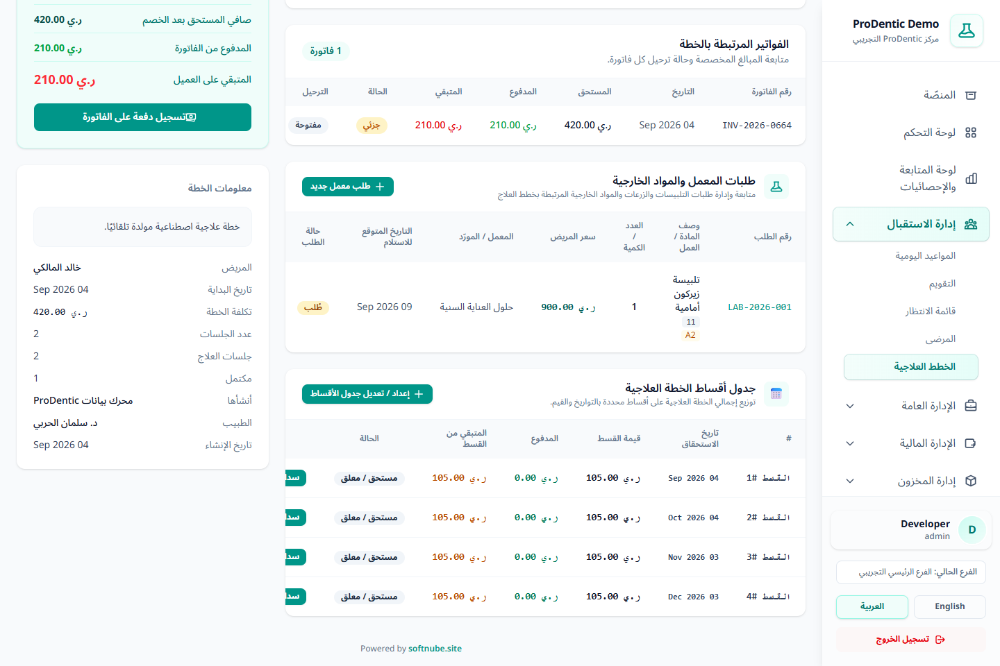
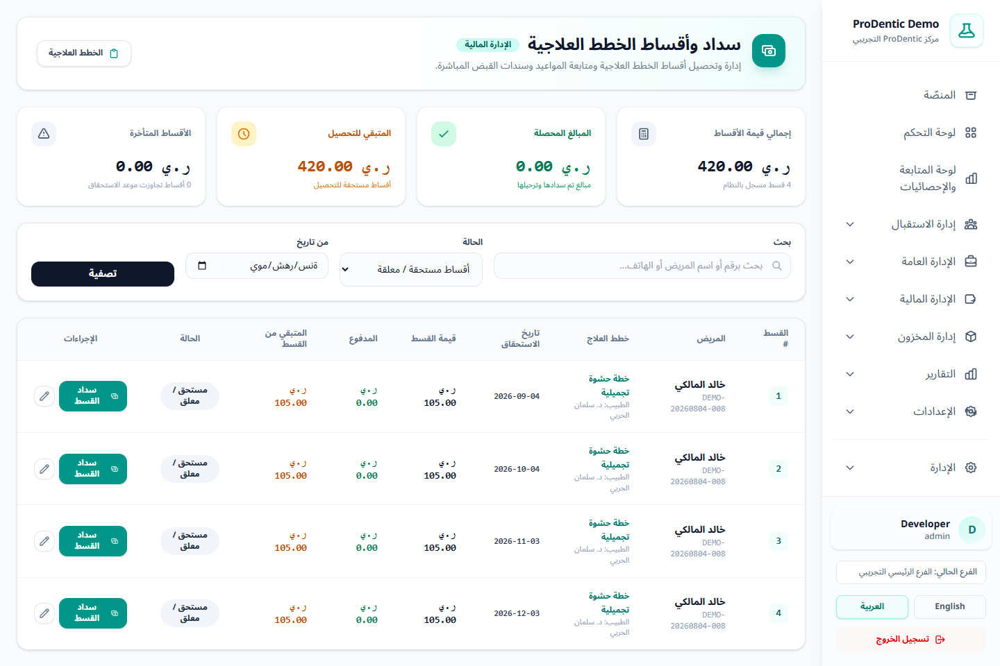

1التفعيل والصلاحيات
- افتح الإعدادات ← الإعدادات المالية.
- فعّل خيار تفعيل نظام الأقساط للخطط العلاجية ثم احفظ.
- للعرض يلزم
installments.viewأوaccounting.view. وللسداد والإدارة يلزم إحدى صلاحياتinstallments.payأو إنشاء الدفعات أو تعديل الخطط.
عند تعطيل الميزة تختفي من القائمة ومن صفحة الخطة، ويمنع النظام فتح روابطها مباشرة.
2إنشاء جدول أقساط داخل الخطة
افتح الخطة العلاجية ثم انتقل إلى جدول أقساط الخطة العلاجية واضغط إعداد / تعديل جدول الأقساط.
التوزيع التلقائي المنتظم
- حدد عدد الأقساط من 1 إلى 60.
- حدد تاريخ أول استحقاق والفاصل بالأيام من 1 إلى 365.
- يضبط النظام قيمة الأقساط بالتساوي ويعالج فرق التقريب في القسط الأخير.
- اضغط حفظ جدول الأقساط.
التحديد المخصص
أضف كل قسط بقيمته وتاريخه وملاحظته. استخدم هذا النمط عندما تختلف الدفعة المقدمة أو المواعيد أو مبالغ الأقساط.

القيمة التي يوزعها النظام مأخوذة من مجموع بنود فاتورة الخطة بعد الخصومات، وليست رقمًا منفصلًا يُكتب يدويًا.
3شاشة التحصيل والمتابعة
من القائمة اختر الإدارة المالية ← سداد وأقساط الخطط العلاجية. تعرض البطاقات إجمالي قيمة الأقساط، المحصّل، المتبقي للتحصيل، وعدد وقيمة الأقساط المتأخرة.
- البحث برقم المريض أو اسمه أو هاتفه، أو بعنوان/رقم الخطة.
- التصفية حسب «مستحق/معلق»، «متأخر»، «مسدد» أو جميع الحالات.
- تحديد نطاق تواريخ الاستحقاق.
- من الجدول يمكن فتح الخطة، سداد القسط أو تعديل القسط المسموح.

4تسجيل سداد قسط
- اضغط سداد القسط في الصف المطلوب.
- راجع اسم المريض والخطة وتاريخ الاستحقاق والمتبقي.
- أدخل المبلغ؛ يمكن أن يكون جزئيًا، لكنه لا يتجاوز المتبقي على القسط.
- اختر طريقة الدفع، وأدخل رقم المرجع عندما تكون الطريقة تحويلًا أو بطاقة حسب إعدادها.
- أدخل تاريخ الدفع والملاحظة عند الحاجة ثم أكد العملية.
ينشئ النظام دفعة للمريض، يسجل القيد المحاسبي، يعيد توزيع دفعات المريض على البنود، ثم يحدّث حالة القسط إلى مسدد جزئيًا أو مسدد بالكامل.
5تعديل أو حذف القسط
| الحالة | التعديل | الحذف |
|---|---|---|
| غير مسدد | يمكن تعديل القيمة والتاريخ والملاحظة. | مسموح. |
| مسدد جزئيًا | مسموح، لكن لا يمكن خفض القيمة دون المبلغ المدفوع. | غير مسموح. |
| مسدد بالكامل | غير مسموح. | غير مسموح. |
عند إعادة إنشاء الجدول يحتفظ النظام بالأقساط المسددة بالكامل، ويستبدل الأقساط غير المسددة بالجدول الجديد.
6قواعد مالية مهمة
- تاريخ اليوم لا يعد متأخرًا؛ تصبح الحالة متأخرة بعد مرور تاريخ الاستحقاق والقسط ما زال معلقًا أو جزئيًا.
- القسط وسيلة لتنظيم التحصيل ولا يغيّر وحده شروط الاعتراف بالإيراد أو استحقاق عمولة الطبيب.
- أي دفعة قسط تظهر في سجل دفعات المريض وفي المحاسبة، ويجب عدم تسجيل الدفعة نفسها مرة أخرى من شاشة الفاتورة.
- راجع دليل المالية المتقدمة لفهم توزيع الدفعات على البنود.